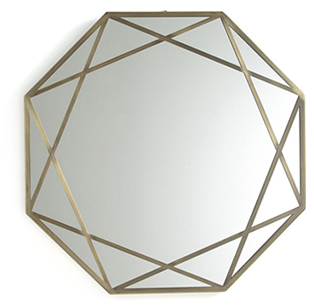

Couleur : or
Forme : octogone
Style : ce miroir dit « Makita », de la marque AMPM, est décoré de deux carrés en laiton superposés.
Époque : vintage
Cadre : le cadre en métal a fait l’objet d'une finition en laiton vieilli.
Hauteur : 70 cm
Largeur : 70 cm
Date d’acquisition : 2017-02-13
Moyen d’acquisition : don
En mai 2020, le prix du miroir était de 259 €.
Ce miroir peut être indifféremment posé sur une commode, un meuble ou fixé au mur.